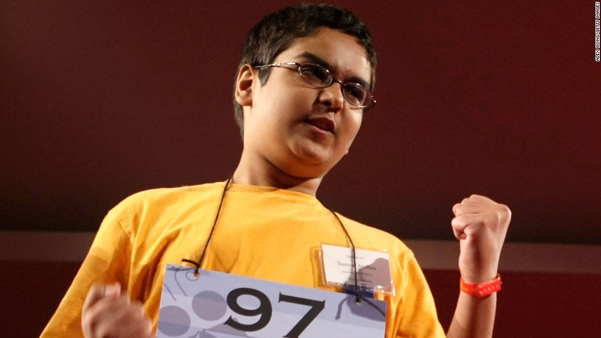

What makes a good speller (or a bad one)?

The Science of spelling
By the time he was 6 or 7 years old, Sameer Mishra was a pretty confident speller. His memory was sharp, he liked to read, and he actually enjoyed the weekly tests at school. While his parents drilled his older sister, a National Spelling Bee competitor, he'd angle for his own list of words.
Within a few years, he made it to the big bee in Washington, too. On his fourth and final trip there in 2008, he won by spelling the word "guerdon," meaning "something that one has earned or gained." Yes, Mishra is a good speller.
But everyone knows people who claim they're terrible at it and never were any good. They'd rather just use spellcheck, they say. To Mishra, they'll confess, embarrassed, "I misspelled 'banana' in the fifth-grade spelling bee" and just gave up.
So what is it that separates the spelling stars from the dictionary-deficient?
For those on stage at the National Spelling Bee this week, it often meant five hours a day memorizing words or studying etymology. For the perfectly good, non-bee spellers among us, it might mean they enjoyed reading from an early age.
But research published in 2016 in the journal Brain suggests it has something to do with how some people's brains retrieve words -- or don't -- and how we manage to get them out -- or not.
For as easy as the teens on stage make it look to spell "scherenschnitte" and "nunatak," there's a lot happening inside to produce each word.
Start with something a little simpler: "If I tell you a word like 'yacht' and ask you to spell it, maybe you can do it," said Brenda Rapp, a cognitive science professor at Johns Hopkins University and lead author of the Brain study.
If you heard the word and came up with y-a-c-h-t, it probably emerged from the areas of the brain that hold orthographic long-term memory, where spelling knowledge is stored.
If you're not familiar with the term of Dutch origin meaning a recreational watercraft, maybe you'd come up with something like y-o-t or y-a-h-t. You'd probably miss the "ch," but perhaps you'd identify a reasonable spelling that converts the sounds to letters, Rapp said. That process takes place in yet another part of the brain.
In either case, you had to hold those letters in mind, convert them into names or shapes and produce them in the right order. That, Rapp said, is orthographic working memory.
Each component plays a part in spelling a word, and each happens in a different part of the brain's left hemisphere.
Rapp and her colleagues studied 33 people who had trouble spelling after strokes. They struggled with long-term memory, working memory or both. The types of spelling errors they produced often depended on where their brains were damaged.
So what does that mean for those who just can't spell? People who haven't experienced a stroke or been diagnosed with something like dyslexia, which is closely related to dysgraphia, a word for poor spelling?
"To be a really good speller, all of these things need to be working well, and they need to be working well together," Rapp said. "You can imagine that in someone who is a poor speller, it suggests either one or more of these systems haven't fully developed, or they aren't interacting properly."
Human brains aren't specifically designed to do spelling or reading, like they are walking or speaking, Rapp said. Spelling and reading only stretch as far back as written language, several thousand years.
"They have to be learned," Rapp said. "They're not built in."
Most of us were trained in spelling and reading in school, but some will still see their emails marred by the angry red spellcheck lines. What you most often hear people complain about, Rapp said, is that they just can't see the word.
"For really poor spellers that otherwise seem like normal people of normal intelligence, it could be that ... for some reasons we don't understand, even though they had the same experience, they weren't able to create these long-term memory representations," she said.
That doesn't mean there's no hope of getting better or finding ways to cope.
Can you spell i-m-p-r-o-v-e-m-e-n-t?
More research is needed to zero in on which techniques works best to teach and learn spelling, but studying followed by testing has helped all of Rapp's stroke patients improve. Repetition -- "lots and lots of repetition" -- is key, she said.
"They study the word, then try to spell the word. They study the word, then try to spell the word. Study, spell, study, spell," Rapp said. "It's very important to test yourself."
For the youngest spellers, the key is getting the right words at the right time, said said J. Richard Gentry, an eduction consultant and author of "Raising Confident Readers." They're just learning to connect shapes with sounds and to store those patterns in their long-term memories. Some will still struggle, but a foundation that exposes children to bats, cats, hats and rats, for example, helps them move on to more complex sound and letter combinations, he said.
Spelling training has gotten more precise as research has improved, he said. No longer should students be presented with a jumble of words taken out of context. But neither does he believe that students should be tested on zingers used mostly in the course of a single reading or writing lesson.
"It's great that we're doing more writing, but spelling needs its own time, about 15 minutes a day," he said. "It's all about frequency and patterns."
And for adults who aren't aiming for spelling bee success? They can develop "spelling consciousness," Gentry said. That's what he calls an awareness that you should take the time to spell check an email or ask someone to read your memo before you send it.
"It's not their fault," Gentry said, especially if they have some form of dyslexia or were never really taught to do more than memorize the words on the test.
Even Mishra, the spelling bee champ, who recently graduated from Columbia University, said memorization can't be the only path to good spelling.
"I don't think it's possible to rote memorize the dictionary," he said.
The markers of spelling success
Mishra has attended the National Spelling Bee since his win, and he still sees four qualities among the best-of-the-best spellers.
They're self-motivated and a little competitive. It's not about humbling the judges or besting other competitors, he said. The enemy is the dictionary, and the butterflies in their stomachs.
Second, they usually have a coach. It's an English teacher or a parent who helps them along the way, drilling them on words and keeping them on schedule. For Mishra, it was his sister, Shruti, who is now in medical school. When he hit a rough patch and struggled with the same words, she reminded him to run around outside or play video games.
"You can get frustrated, tired, exhausted," he said. "I needed someone to tell me: This is just a spelling bee."
Of course, it comes down to the work. The competitors are all intellectually curious, Mishra said. Great spellers are often avid readers, and they commit a lot of words to memory, but they'll also study prefixes, suffixes, foreign languages and definitions that will help them deduce how a word is spelled.
Just this week, after reading in Mishra's spelling bee bio that he's growing a beard, someone mentioned it was a "pogonotrophic fun fact." Mishra didn't know the word, but he knew that "pogo-" or "pogon-" referred to a beard and "-trophy" meant growing or development.
"It's pattern-building," he said. "A lot of really good spellers are really good at patterns."
Finally, Mishra said, great spellers persevere. Many competitors come back to the National Spelling Bee again and again until they've aged out of the competition. They inevitably leave off a letter or buckle after an intense round, but they don't give up and find something else to fill their time. "Grit" is what parents and educators call that quality nowadays.
Mishra doesn't expect everyone to see spelling as an art. But he still feels pangs of sadness when friends admit they've given up on trying.
"There are going to be times in your life when you're not going to have a computer or you're not going to be able open your phone," Mishra said. "You're going to bite your lip and say, 'I should have paid more attention.' "
Subscribe to our newsletter for free